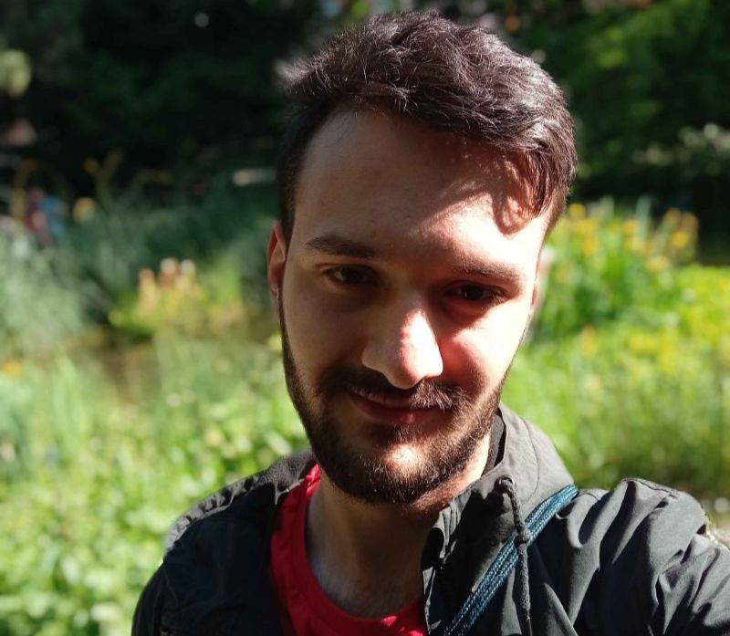

O meni
Bavim se fotografijom već par godina. Uzimam je kao hobi i način da izrazim svoju kreativnost. Zanimljivo je kako svijet možemo prikazati kroz objektiv.
Od opreeme koristim stariju kameru marke Canon. Riječ o EOS 550D iz 2010. godine.
Unatoč da je riječ o vrlo staroj kameri, ona mi je omogućila da naučim osnove fotografije i razvijem svoj stil.
Uz pomoć 18-300mm i 18-55mm objektiva, mogu snimati širok spektar scena, od portreta do pejzaža.
Dali su mi mogućnosti koje nisam mogao ostvariti sa mobitelom, a opet nisu bili prekomplicirani za početnika poput mene.
Što se tiče mojih fotografski interesa, najviše volim snimati arhitekturu, pejzaž i uličnu fotografiju. Fotografije noću uz cilj prikazivanja noćnih scena u gradu ili na ulicama je također moj cilj. To mi omogućuje da koristim refleksije boja, svijetla i prometa kako bih pretvorio fotografiju u pravu umjetnost punu boja; gdje svijetla i refleksije stvaraju magiju kao da je naslikana kistom.
